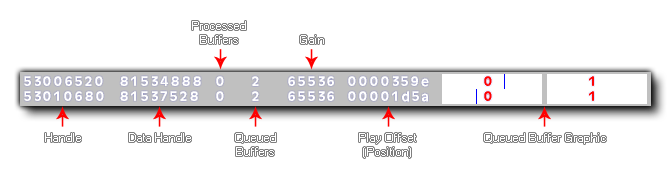

Cette fonction peut être utilisée pour afficher des informations de débogage sur le système audio, avec true l'allumer et false pour l'éteindre. Lorsque vous déboguez l'audio de cette manière, la superposition affiche les informations suivantes: 
- Handle - Le handle de source OpenAL (unique pour chaque son joué)
- Data Handle - Le handle de tampon OpenAL (affiche la même valeur pour plusieurs sons avec la même poignée source)
- Tampons traités - combien de tampons ont été joués
- Tampons en file d'attente - combien de tampons ont été mis en file d'attente (et attendent toujours de jouer)
- Gain - La valeur de gain pour l'audio (0 - 65536)
- Play Offset - la position de l'échantillon (position de lecture actuelle) dans le tampon courant
- Barres tampons en file d'attente - un petit diagramme de boîte des tampons traités / en file d'attente avec le décalage de lecture (position actuelle) dessiné comme une ligne bleue
Pour les groupes d'audio synchronisés, vous avez également la fonction audio_sync_group_debug().
REMARQUE: cette fonction ne fonctionne pas sur la plate-forme cible HTML5.
audio_debug(enable);
| Argument | La description |
|---|---|
| enable | Activer (défini sur true ) ou désactiver ( false ) débogage audio. |
N/A
if (debug_mode)
{
audio_debug(true);
}
else
{
audio_debug(false);
}
Le code ci-dessus activera ou désactivera la superposition de débogage audio selon que le jeu fonctionne en mode débogage ou non.